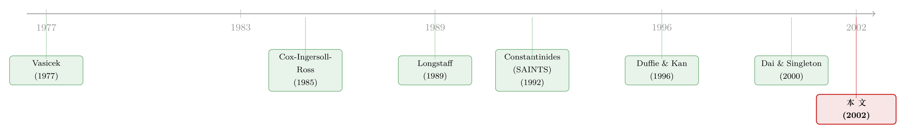

利率为什么「跌不破零」却又能「负相关」——二次型期限结构模型的破局
本文读的是 Ahn, Dittmar & Gallant (2002, Review of Financial Studies)：他们把短期利率写成状态变量的二次型（而非仿射函数），由此构造出一个「全能版」的二次型期限结构模型（QTSM），既能保证名义利率严格为正，又允许状态变量之间负相关、还能容纳时变波动率——这正是仿射模型（ATSM）做不到的事；用 EMM 估计后，QTSM 在拟合美国国债数据上系统性地胜过了 Dai & Singleton (2000) 那个「最灵活」的仿射模型。
1 一道做不全的三选题
先讲一个让无数利率模型「卡壳」的尴尬。
一个像样的期限结构模型，至少要同时做对三件事：
第一，名义利率不能为负。现实里你几乎见不到长期为负的名义利率，一个会预测出负利率的模型，光这一条就够丢人。
第二，波动率要会随行情起伏（heteroscedastic volatility，异方差波动率）。利率高的时候抖得厉害、利率低的时候安静下来，这是数据里铁打的规律。
第三，因子之间要能负相关。短端和长端、水平和斜率，这些驱动收益率曲线的因子彼此并非各走各路——经验上它们常常是负相关的，模型必须允许这种相关结构。
听上去都是基本功。可问题在于，过去二十年里最当红的那一类模型——仿射期限结构模型 (affine term structure models, ATSM)——偏偏没法把这三件事一次做全。
所谓仿射，是说它把收益率（或对数债券价格）写成状态变量的线性函数。从 Vasicek (1977)、CIR (Cox-Ingersoll-Ross, 1985) 一路到 Duffie & Kan (1996) 把这套框架的原始假设讲清楚，仿射模型几乎统治了整个领域。它好用、可解、能算出债券价格的闭式解。但 Dai & Singleton (2000) 做了一件很扎心的事：他们把仿射模型的「可容许性 (admissibility)」条件——也就是模型在数学上不自相矛盾、利率不会乱跑——彻底梳理了一遍，结果发现了一个结构性的权衡 (trade-off)。
在 Dai & Singleton 的记号里，\(A_m(n)\) 表示一个有 \(n\) 个状态变量、其中 \(m\) 个是平方根（square-root）过程、\(n-m\) 个是高斯因子的仿射模型。可容许性要求那 \(m\) 个平方根因子之间只能非负相关。于是：你想要更多的异方差波动率（调大 \(m\)），就得牺牲掉因子之间负相关的自由度；而唯一能保证利率严格为正的，是 \(A_n(n)\)——所有因子都是平方根过程的（可能相关的）多因子 CIR 模型。
把这几句话连起来就是那道做不全的三选题：仿射模型没法同时既允许负相关、又保证正利率。要正利率，就得全用平方根因子，可平方根因子之间又不许负相关。鱼和熊掌，仿射框架里只能二选一。
更糟的还在后头。Duffee (2000) 发现仿射模型预测未来收益率变化的能力很差——一个简单的鞅（martingale）预测都比它强；Dai & Singleton 自己也注意到，仿射模型的定价误差对收益率曲线斜率高度敏感、而且非常持久，这暗示模型里漏掉了某种非线性 (nonlinearity)。
于是一个自然的问题是：既然仿射这条路被「线性」这个假设卡死了，那为什么不换一个函数形式？
2 把「线性」换成「二次型」
答案出人意料地简洁：把短期利率写成状态变量的二次型 (quadratic form)。
这就是本文的核心，也是这一整类模型的名字——二次型期限结构模型 (quadratic term structure models, QTSM)。它的诀窍藏在两个看似不相干的选择的组合里：
状态变量用高斯过程（Gaussian diffusion，可以负相关、可以随便取负值），而利率是这些状态变量的二次函数。
为什么这一招能破局？关键在一个初中就学过的事实：一个正半定的二次型永远非负。状态变量 \(Y(t)\) 自己可以是高斯的、可以取负、可以彼此负相关——爱怎么折腾怎么折腾；但只要利率被写成 \(Y(t)'\Psi Y(t)\) 这样的二次型（再配上合适的常数项），\(\Psi\) 一旦正半定，利率就自动「跌不破」一个下界。负相关的自由度留给了高斯的 \(Y\)，正利率的保证则交给二次型的几何——两件事被巧妙地解耦了。
这正是仿射模型做不到的：仿射模型里利率是 \(Y\) 的线性函数，要让线性函数恒为正，就只能逼着 \(Y\) 自己恒为正（平方根过程），可恒为正的因子又被可容许性按住了相关性。QTSM 一换函数形式，三选题就不再是三选题。
并且，因为二次型本身就是非线性的，QTSM 天然属于非仿射模型家族，正好有机会去捕捉 Dai & Singleton 抱怨的那块「被漏掉的非线性」。
（关于「换一把尺子、利率模型结论就翻案」的类似故事，可参见《波动率到底藏在哪里？》与《给「风险的价格」松一道绑》。）
3 模型：从定价核到二次型债券价格
这是一篇彻头彻尾的理论论文，模型这一节值得一步步走清楚。作者走的是定价核 (pricing kernel) 路线——直接给随机贴现因子 (stochastic discount factor) 设定一个随机过程，而不是从效用函数倒推。整套结构建立在三条假设上。
假设 1（贴现因子的动态）。 名义随机贴现因子 \(M(t)\) 满足
$$ \frac{dM(t)}{M(t)} = -r(t)\,dt + \big[\xi_0 + \xi_1 Y(t)\big]^{\!\top} dw_N(t), $$
其中 \(Y(t)\) 是 \(N\times 1\) 的状态变量向量，\(w_N(t)\) 是 \(N\) 维相互独立的标准维纳过程。漂移项是 \(-r(t)\)——这来自贴现因子是鞅（贴现后）的性质 [Harrison & Kreps (1979)]；扩散项被设成状态变量的仿射函数，即由常数 \(\xi_0\) 加上随 \(Y\) 线性变化的部分 \(\xi_1 Y(t)\) 共同决定。
假设 2（利率是二次型）。 名义瞬时利率为
并附两条符号约束：\(\alpha - \tfrac{1}{4}\beta^{\top}\Psi^{-1}\beta \ge 0\)，且 \(\Psi\) 正半定。这两条约束保证了利率的非负性。由于 \(\Psi\) 正半定，对 \(Y(t)\) 关于二次型配方，可得利率的下界就是 \(\alpha - \tfrac{1}{4}\beta^{\top}\Psi^{-1}\beta\)，在 \(Y(t) = -\tfrac{1}{2}\Psi^{-1}\beta\) 处取到。
这条下界还有个漂亮的现实含义：它可以严格大于零——这恰好对应「货币当局为刺激增长所能容许的最低利率」这样一个经济解读。
假设 3（状态变量是均值回复的高斯过程）。
$$ dY(t) = \big(\mu + \xi\, Y(t)\big)\,dt + \Sigma\, dz_N(t), $$
其中 \(\mu\) 是常数向量，\(\xi\)、\(\Sigma\) 是 \(N\times N\) 常数矩阵，\(z_N(t)\) 是 \(N\) 维独立维纳过程。要求 \(\xi\) 可对角化、且特征值的实部为负——这保证了状态变量的平稳性 (stationarity)。它的稳态长期均值是 \(-\xi^{-1}\mu\)，瞬时协方差矩阵是 \(\Sigma\Sigma^{\top}\)。\(dw_N\) 与 \(dz_N\) 之间的相关矩阵记为 \(\rho\)。
接着，债券价格怎么解出来？ 设 \(V(t,\tau)\) 为 \(t\) 时刻、距到期还有 \(\tau\) 的零息债券价格。由基本估值方程，\(V(t,\tau) = E^P_t[M(t,t+\tau)]\)。把归一化债券价格 \(Z(t,\tau)=V(t,\tau)/B(t)\)（\(B\) 为货币市场账户）写出 SDE，对它用伊藤引理（Ito's lemma），再利用「\(\Lambda(t,t+\tau)Z(t,\tau)\) 是鞅」这个无套利条件，就能把债券的瞬时超额收益逼出来：
$$ a(t,\tau) - r(t) = -\,b(t,\tau)\,\rho\,\big[\xi_0 + \xi_1 Y(t)\big], $$
整理后得到一个债券价格的基本偏微分方程 (PDE)。它的左边是债券的瞬时期望收益（由伊藤引理给出），右边把这个收益拆成「无风险利率 + 风险溢价」，而风险溢价又是两块的乘积：\(\partial V/\partial Y \big/ V\) 是债券对各状态变量的敏感度向量，而 \(-\Sigma\rho[\xi_0+\xi_1 Y(t)]\) 则是因子风险的市场价格，也就是状态变量与贴现因子之间的协方差。
由于贴现因子不可观测，\(\rho\)、\(\xi_0\)、\(\xi_1\) 没法分开识别，作者于是把它们打包定义为风险的市场价格：\(\lambda_0 \equiv -\Sigma\rho\,\xi_0\)，\(\lambda_1 \equiv -\Sigma\rho\,\xi_1\)，总的市场价格写成 \(\lambda_0 + \lambda_1 Y(t)\)。
最后一步是结果的形状。 既然利率是 \(Y\) 的二次型，那么解出来的对数债券价格也是 \(Y\) 的二次型——债券价格呈指数-二次型 (exponential-quadratic)：
$$ V(t,\tau) = \exp\!\big[-A(\tau) - B(\tau)^{\top}Y(t) - Y(t)^{\top}C(\tau)\,Y(t)\big], $$
于是收益率本身
$$ y(t,\tau) = \frac{1}{\tau}\Big[A(\tau) + B(\tau)^{\top}Y(t) + Y(t)^{\top}C(\tau)\,Y(t)\Big] $$
是状态变量的二次函数——这正是 QTSM 区别于 ATSM（收益率是 \(Y\) 的线性函数）的标志。系数 \(A(\tau)\)、\(B(\tau)\)、\(C(\tau)\) 由一组常微分方程（Riccati 型）刻画。
这里还藏着一个有意思的副产品：利率的条件/无条件分布不再是单一的非中心卡方分布，而是非中心卡方分布的无穷混合。只有当状态变量彼此正交时，它才退化为一个非中心 \(\chi^2\)。这意味着 QTSM 的利率分布既不同于 SAINTS，也不同于 Beaglehole & Tenney (1992) 的单变量二次模型——二次型这个函数形式本身，就重新塑造了利率的整个分布。
4 一座「全能模型」如何收编它的前辈
QTSM 不是一个新模型，而是一类模型。它的真正野心，是做一个最大灵活 (maximally flexible) 的「全能版」，把这十几年来零散冒出来的各种二次型模型都收编为特例：
- Longstaff (1989) 的双平方根模型（double square-root）；
- Beaglehole & Tenney (1992) 的单变量二次模型；
- Constantinides (1992) 的 SAINTS 模型（squared-autoregressive-independent-variable nominal term structure，平方-自回归-独立变量名义期限结构）。
这里 SAINTS 是个尤其值得说的对象。它的推导方式很特殊——直接设定贴现因子的形式——这让它没法和别的模型直接对照，也就说不清到底是它的哪条设定带来了好或坏的表现。作者做了一件「考古」式的工作：通过一个不变变换 (invariant transformation) 加上重新参数化和若干约束，证明全能版 QTSM 可以被一步步「拧」回 SAINTS。
而这一拧，拧出了一个尴尬的真相：SAINTS 其实暗中对因子风险的市场价格施加了一些外生约束，这些约束是从它「直接设定贴现因子」的做法里继承来的，背后并没有任何经济学理由。换句话说，SAINTS 的某些限制不是模型推出来的，而是写法「附赠」的。
为了把这层层嵌套关系讲清楚、并定位「改进到底来自哪一步」，作者在实证里设了四个由松到紧的版本：
- QTSM1：全能版，状态变量之间允许相关；
- QTSM2：状态变量正交，但短期利率的决定中保留交互项；
- QTSM3：状态变量正交，短期利率中也无交互项；
- QTSM4：SAINTS。
它们满足 \(\text{QTSM4} \subset \text{QTSM3} \subset \text{QTSM2} \subset \text{QTSM1}\)——每一个都嵌套在更灵活的那个里。沿着这条阶梯一格格放松约束，就能看清拟合优度的改进究竟由谁贡献。
5 估计的拦路虎，与 EMM 的解法
讲到这里，一个尖锐的问题浮出来：QTSM 出现了十来年，为什么几乎没人做过严肃的实证？
因为它难估。在仿射模型里，哪怕只有一个状态变量，短期利率本身就是期限结构的充分统计量；可在 QTSM 里，利率和收益率都是不可观测状态变量的二次函数，短期利率不再是充分统计量。再加上模型设在连续时间里，估计必须处理离散化偏误 (discretization bias) [Aït-Sahalia (1996a)]。这两道坎把整类 QTSM 的实证长期挡在门外——此前唯一的实证只有 Lu (1999) 用非线性滤波估过一个两因子 SAINTS。
作者的解法是 Gallant & Tauchen (1996) 的有效矩方法 (efficient method of moments, EMM)。EMM 恰好能绕开上述两个难题：它先用一个半非参数 (SNP) 的辅助模型为数据拟合一个「打分函数」，再通过模拟去匹配这些矩，既不要求状态变量可观测，也能处理连续时间下的离散化。作者跟随 Dai & Singleton (2000) 的做法，同时用短端和长端的国债收益率时间序列来估计。（关于「写不出似然函数就让它自己跑一遍」的同源思路，可参见《写不出来的似然函数，就让它自己「跑」一遍》。）
结果呢？ 拟合优度检验（goodness-of-fit / 设定检验）给出了一条非常干净的层层递进：
- SAINTS（QTSM4）被强烈拒绝——Constantinides (1992) 那些外生约束，数据不买账；
- 一旦放松这些约束，二次型这一类模型的拟合戏剧性地改善；
- 当全能版 QTSM1 进一步允许状态变量之间相关，表现再上一层楼，QTSM 给出了对期限结构动态的良好刻画；
- 而作为对照，Dai & Singleton (2000) 那个最大灵活的 ATSM，连正交版 QTSM3 都拟合不过——尽管它已经引入了因子间的相关性。
最后这一条最有分量：它说明 QTSM 的优势不是靠多塞了几个相关参数堆出来的，而是「二次型」这个函数形式本身带来的——一个连相关性都关掉的正交 QTSM，都能赢过武装到牙齿的仿射模型。
6 文献脉络
把这条线捋一捋，会看到一场「函数形式」上的接力。
最早是 Vasicek (1977) 用 Ornstein-Uhlenbeck 过程给短期利率建模，简洁却带来同方差的硬伤；CIR (1985) 引入平方根过程，让波动率随利率水平变化、并把利率钉在零以上，奠定了仿射框架的基石。沿着仿射这条主线，Duffie & Kan (1996) 把它的原始假设彻底讲清楚，Dai & Singleton (2000) 则做了那次关键的「体检」——既给出最大灵活的仿射模型、又揭穿了它在波动率、相关性与正利率之间无法兼得的结构性权衡。
与此同时，另一条「非仿射」的暗线一直在缓慢生长：Longstaff (1989) 的双平方根、Beaglehole & Tenney (1992) 的单变量二次、Constantinides (1992) 的 SAINTS——它们都把利率写成高斯状态变量的二次函数，却各自为政、互不对话。

本文 Ahn, Dittmar & Gallant (2002) 站的正是这条暗线的「收束点」：它第一次把这些零散的二次型模型统一进一个最大灵活的框架，理论上厘清了它们的可容许性与识别，实证上又借 Gallant & Tauchen (1996) 的 EMM 给出了第一次像样的检验，并直接和 Dai & Singleton 的仿射标杆掰了手腕。
评论与延伸（Q&A + 研究方向）
(a) 几个可能的疑问
Q：二次型保证了「下界」，可这个下界一定是零吗？会不会反而锁死了利率？
不一定是零。下界是 \(\alpha - \tfrac{1}{4}\beta^{\top}\Psi^{-1}\beta\)，由参数决定，可以严格为正。作者还特意给了它一个经济解读：货币当局为刺激增长所能容许的最低利率。这反而比「硬钉在零」更灵活。当然，在今天负利率已成现实的世界里，这条「永不为负」的设定本身是否还是优点，值得重新掂量。
Q：QTSM 比 ATSM 拟合好，会不会只是因为它参数更多、在过度拟合？
这正是本文设计四个嵌套模型的用意。最有说服力的一条是：正交的 QTSM3——它甚至关掉了状态变量之间的相关——都能拟合得比最大灵活的 ATSM 好。一个参数更省的模型赢过参数更多的对手，过度拟合的解释就站不住，胜负更可能来自函数形式本身。
Q：「二次型 vs 仿射」到底差在哪一个直觉点上？
一句话：仿射模型要正利率，就得让因子自己恒为正（平方根过程），而恒为正的因子被可容许性禁止负相关；二次型把「正利率」交给二次型的几何、把「负相关」留给高斯因子，两件事解耦，于是三选题不再互斥。
Q：SAINTS 被拒绝，是不是说明 Constantinides (1992) 错了？
不是「错」，而是它的某些约束没有经济学根据。作者证明 SAINTS 是全能 QTSM 在特定重参数化和限制下的特例，而这些限制是从「直接设定贴现因子」的写法里附带继承的。数据拒绝的是这些多余的约束，不是二次型思想本身——恰恰相反，放松它们之后二次型模型表现大放异彩。
Q：为什么非要用 EMM 这么重的家伙？
因为 QTSM 的两个死穴：状态变量不可观测（利率是它的二次函数，短端不再是充分统计量），加上连续时间带来的离散化偏误。极大似然几乎无从下手。EMM 通过「半非参数辅助模型 + 模拟匹配矩」同时绕过这两点，而且相比扩展卡尔曼滤波那类间接推断，它在计算上更有优势。
Q：这套模型对债券衍生品定价有用吗？
有。一旦解出指数-二次型的债券价格，期权等衍生品的定价就主要是「在风险中性测度下再算一层期望」的问题。这与仿射模型里「解完债券价格、定价就只剩换常数」的精神一致（参见《解完债券价格，期权定价就只剩「换几个常数」的事》）。
(b) 几个可能的研究问题与提案
1. 把 QTSM 搬到公司债的信用利差上。 【经济故事】公司债利差里既有违约成分、也有流动性成分，而且经验上利差对收益率曲线斜率高度非线性、还会在危机中爆发负相关。QTSM「正利差 + 负相关 + 时变波动率」三件套，天然适合给违约强度（hazard rate）建模——强度恒为正，正是二次型的拿手好戏。 【可行性】中。数据可用 TRACE 成交 + Merrill/ICE 利差曲线，识别上可借鉴 Duffie-Singleton 的简约式框架把违约强度设成二次型。难点在状态变量不可观测，仍需 EMM 或粒子滤波，工程量不小。
2. 负利率时代的「二次型还要不要正下界」？ 【经济故事】本文把「利率永不为负」当成卖点，但 2014 年后欧日多次出现负政策利率。一个自然的延伸：把下界参数 \(\alpha - \tfrac14\beta'\Psi^{-1}\beta\) 设为可正可负、甚至时变，检验数据偏好哪一种。 【可行性】高。直接放松约束、在更新的样本（含负利率期）上重估即可，识别和估计框架现成，是一个干净的「老模型 + 新数据」题目。
3. 用机器学习辅助函数（SNP 之外）重做 EMM 的打分模型。 【经济故事】EMM 的统计效率取决于辅助模型能不能逼近真实条件密度。今天用神经网络密度估计替代 SNP，或许能在保留 EMM 一致性的同时提升小样本表现。 【可行性】中。理论上 EMM 对辅助模型只要求「够灵活」，换成神经网络是合法的；难点在数值稳定与可复现，且要论证效率确有提升。
4. 把外资持有结构作为「额外状态变量」塞进 QTSM。 【经济故事】国债收益率近年越来越受外国官方/私人持有人需求的影响。若把外资持有占比作为一个会影响风险价格 \(\lambda_0+\lambda_1 Y\) 的状态变量，二次型框架能容纳它与利率水平的负相关。 【可行性】中偏低。TIC 持有数据频率低（月度）、且与高频收益率对齐困难，识别外资需求的外生变动需要额外的工具或事件（如指数纳入），doable 但门槛高。
参考文献
- Ahn, D.-H., Dittmar, R. F., & Gallant, A. R. (2002). Quadratic Term Structure Models: Theory and Evidence. Review of Financial Studies 15(1), 243–288.
- Aït-Sahalia, Y. (1996). Nonparametric Pricing of Interest Rate Derivative Securities. Econometrica 64, 527–560.
- Beaglehole, D., & Tenney, M. (1992). A Nonlinear Equilibrium Model of the Term Structure of Interest Rates: Corrections and Additions. Journal of Financial Economics 32, 345–454.
- Constantinides, G. (1992). A Theory of the Nominal Structure of Interest Rates. Review of Financial Studies 5, 531–552.
- Cox, J., Ingersoll, J., & Ross, S. (1985). A Theory of the Term Structure of Interest Rates. Econometrica 53, 385–406.
- Dai, Q., & Singleton, K. (2000). Specification Analysis of Affine Term Structure Models. Journal of Finance 55, 1943–1978.
- Duffee, G. (2000). Term Premia and Interest Rate Forecasts in Affine Models. Working paper, University of California, Berkeley.
- Duffie, D., & Kan, R. (1996). A Yield-Factor Model of Interest Rates. Mathematical Finance 6, 379–406.
- Gallant, A. R., & Tauchen, G. (1996). Which Moments to Match. Econometric Theory 12, 657–681.
- Harrison, M., & Kreps, D. (1979). Martingales and Arbitrage in Multiperiod Security Markets. Journal of Economic Theory 20, 381–408.
- Longstaff, F. (1989). A Nonlinear General Equilibrium Model of the Term Structure of Interest Rates. Journal of Finance 23, 1259–1282.
- Lu, B. (1999). An Empirical Analysis of the Constantinides Model of the Term Structure. Working paper, University of Michigan.
- Vasicek, O. (1977). An Equilibrium Characterization of the Term Structure. Journal of Financial Economics 5, 177–188.